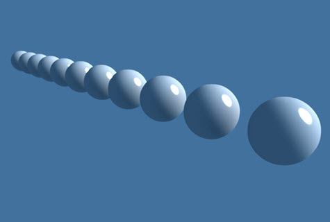
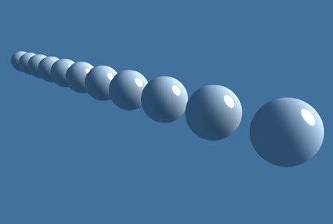
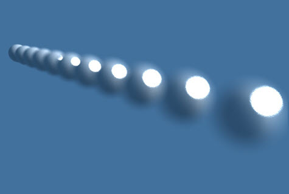
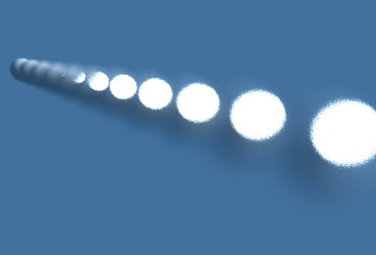
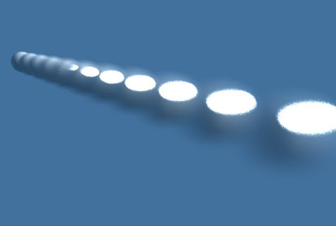
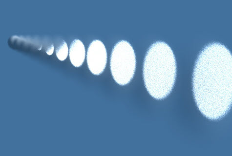
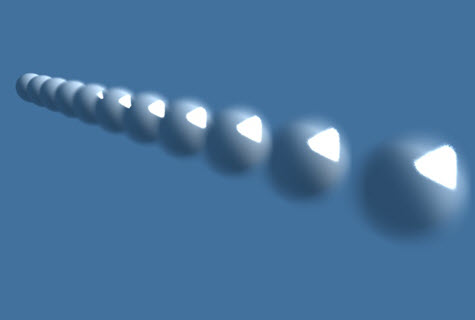
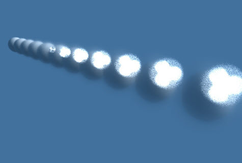
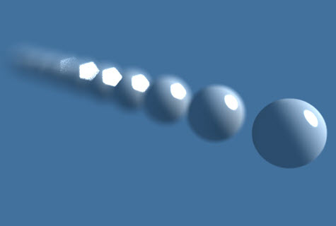

景深
下面的图像展示了不同的摄影机景深值的效果。下面的示例使用了一个半径为 1 的球体（记住，场景的比例大小可影响您使用的景深值）。
|  |  | |
| 无景深 | 大小：0.01。宽高比：1 | 大小：0.25。宽高比：1 |
|  |  |  |
| 大小：0.5。宽高比：1 | 大小：1。宽高比：1 | 大小：1。宽高比：0.5 |
|  |  |  |
| 大小：1。宽高比：2 | 大小：0.5。宽高比：1。叶片数：3 | 大小：1。宽高比：0.5。叶片数：3。叶片曲率：-5 |
 |
||
| 大小：1。宽高比：0.5。叶片数：3。叶片曲率：0.5 | 大小：1。宽高比：0.5。叶片数：4。 | 大小：1。宽高比：0.5。叶片数：4。旋转：45 |
|  | ||
| 距离：8.5。大小：1。宽高比：0.5。叶片数：3。叶片曲率：-5 |